Как оценить потерянный доход в Google AdWords с помощью языка R
Сколько прибыли вы не получили в Google AdWords из-за нехватки бюджета или низкого рейтинга ключевых слов? Стандартные отчеты не позволяют это проанализировать, но я знаю способ, как подсчитать эти данные с помощью языка программирования R.

Анализ потерянных конверсий — полное руководство
Недавно в блоге я описывал алгоритм для определения количества потерянных конверсий с помощью Supermetrics (специального дополнения к Google Таблицам). Тогда бесплатного базового функционала Supermetrics было вполне достаточно, но со второй половины февраля 2016 года данное дополнение стало платным. Скорее всего, далеко не каждому захочется отдавать $50 в месяц за отчёт по потерянным конверсиям, поэтому я нашел другой способ реализации данного алгоритма.
Возможно, изначально этот метод покажется более сложным, но, потратив некоторое время, в дальнейшем вы сможете бесплатно обновлять данные и контролировать потери показов и дохода по всем рекламным кампаниям. К тому же алгоритм был усовершенствован, теперь он предназначен больше для ecommerce проектов и главная его задача — оценка потерянного дохода, а не конверсий.
Как визуализировать показатель качества ключевых слов — рецепт скрипта на языке R
Данное решение реализовано на языке R, он предназначен для статистической обработки данных и визуализации информации. Язык R был разработан более 20 лет назад непосредственно для академических исследований. Как большинство бесплатных продуктов, R очень быстро стал набирать популярность, в связи с чем к нему было написано множество пакетов, значительно расширяющих его базовый функционал. В данной статье мы рассмотрим два пакета, предназначенные для работы с API Google AdWords и Google Analytics.
Что необходимо для реализации алгоритма?
- На сайте должен быть установлен код отслеживания электронной коммерции, и соответственно в Google Analytics должны отслеживаться данные о совершенных транзакциях.
- Аккаунт Google Analytics должен быть связан с Google AdWords.
- На ПК должен быть установлен язык R, для этого пройдите по ссылке, скачайте и установите последнюю версию.
- Для более удобной работы в R предлагаю также скачать и установить RStudio, именно в этой среде программирования мы будем запускать скрипт.
- Должен быть создан Developer Client в консоли разработчика Google, об этом более подробно я расскажу далее.
- Самое трудное, что понадобится сделать, это получить токен разработчика AdWords для доступа к API Google AdWords (как его получить).
Если перечисленные пункты вас не смущают, то можем двигаться дальше.
Как создать Developer Client в консоли разработчика Google?
Практически на каждый вышеперечисленный пункт я привел ссылку на справочную информацию, осталось рассмотреть процесс создания Developer Client. 1. Перейдите по этой ссылке в консоль разработчика и откройте меню «Product & Services» с помощью кнопки в левом верхнем углу.
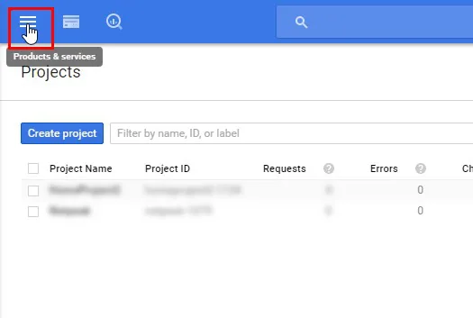
- На данный момент нас интересует пункт «API manager» — перейдите на эту вкладку.
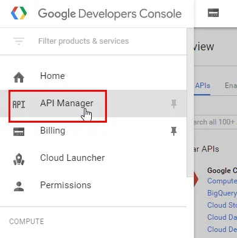
2.1. В списке доступных API выбираем «Analytics API».
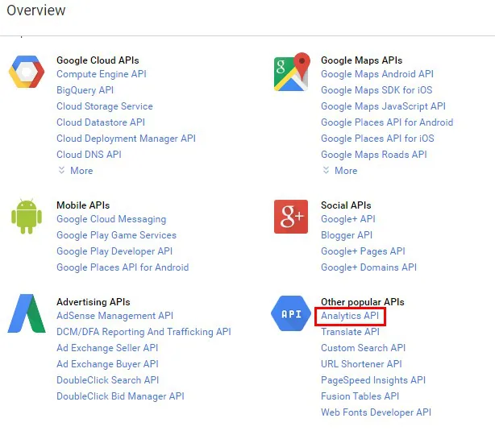
2.2. Активируем API, нажав кнопку «Enable».
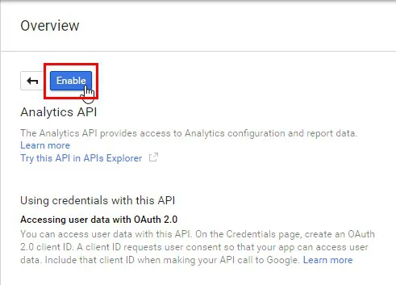
- Далее в меню, находящемся в левой части экрана, выбираем пункт «Credentials».
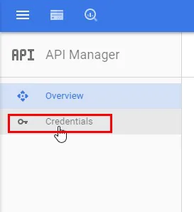
3.1. В выпадающем списке «Create credential» выбираем пункт «OAuth client ID».
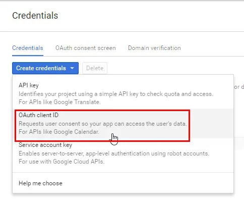
3.2. В поле «Name» вводим имя клиента и жмём «Create».
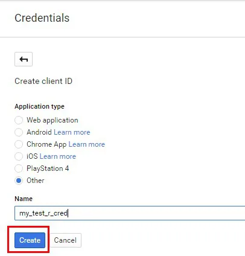
3.3. Далее будут предоставлены учетные данные Client ID и Client Secret, которые в последующем нужно добавить в скрипт, а также указать при аутентификации.
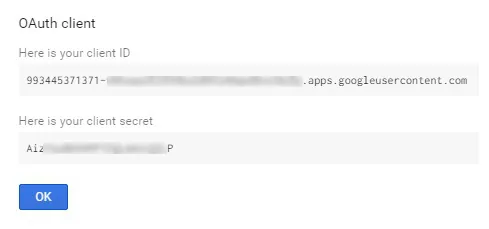
Запуск скрипта в RStudio
Для перехода к этому шагу должны быть реализованы шесть пунктов, описанных в начале статьи. На это может уйти несколько дней.
1. Подключаем необходимые пакеты R
Открываем RStudio и вставляем следующую часть R-скрипта в область «Source».
#1. Установка и подключение требуемых пакетов
install.packages("curl")
require("curl")
install.packages("bitops")
require("bitops")
install.packages("devtools")
require("devtools")
install.packages("RGoogleAnalytics")
require(RGoogleAnalytics)
install_github('jburkhardt/RAdwords')
require(RAdwords)
Для запуска первой части скрипта выделите его с помощью мыши и нажмите «Ctrl + Enter». Таким образом будет запущен процесс установки требуемых пакетов, а на экране появится окно, отображающее прогресс установки.
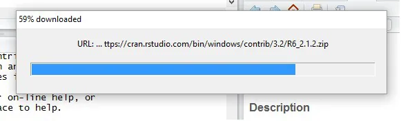
Данная часть скрипта установит необходимые для дальнейшей работы пакеты: «devtools», «RGoogleAnalytics» и «RAdwords». Пакеты «RGoogleAnalytics» и «RAdwords» предназначены для работы с API одноименных сервисов. Пакет «devtools» нужен, чтобы установить последнюю версию пакета «RAdwords» непосредственно с Github, поскольку по умолчанию все пакеты распространяются через CRAN (акроним Comprehensive R Archive Network). В данном случае с CRAN можно получить предпоследнюю версию «RAdwords», в которой не учтены последние изменения в API AdWords .
2. Устанавливаем переменные
Теперь стоит задать все переменные, которые понадобятся для дальнейшей работы скрипта. Вставьте представленный ниже код после первого фрагмента кода, который мы добавили для установки требуемых пакетов.
#2. Объявление переменных
clienid <- "150487456763-XXXXXXXXXXXXXXX.apps.googleusercontent.com" #Client ID из google console
secret <- "TUXXXXXXXXXXXX_TknUI" #Client secret из google console
ga_view <- "ga:XXXXXXXX" #ID представления из Google Analytics
adwords_id <- "XXX-XXX-XXXX" #ID аккаунта Google AdWords
#Период, за который необходимо определить объём потерянного дохода
start_period <- c(day = "01",
month = "01",
year = "2016")
end_period <- c(day = "20",
month = "03",
year = "2016")
Эту часть скрипта придётся немного доработать, заполнив переменные нужными значениями. 2.1. Для переменной «clienid» введите id клиента, полученное в консоли разработчика. 2.2. Переменной «secret» соответственно необходимо присвоить показатель Client Secret из предыдущего пункта. 2.3. Переменной «ga_view» нужно присвоить ID представления в Google Analytics. Для этого в интерфейсе Google Analytics перейдите в меню «Администратор», после чего в области «Представление» нажмите «Настройки представления».
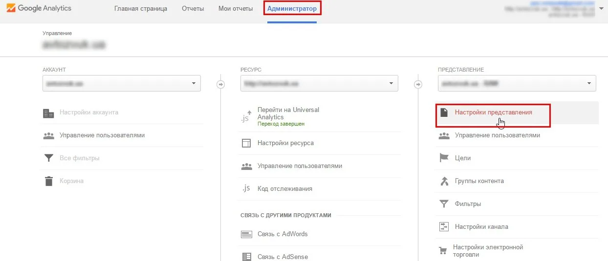
Скопируйте идентификатор представления и вставьте его в скрипт в формате «ga:xxxxxxxxx».
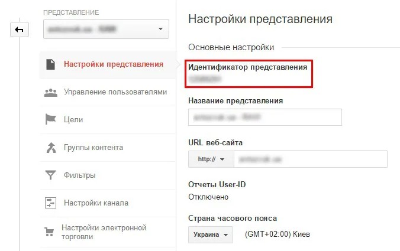
2.4. Переменную «adwords_id»;можно посмотреть в аккаунте Google AdWords.
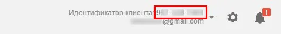
2.5. Переменные «start_period» и «end_period» отвечают за период, за который вы хотите проанализировать объём потерянного дохода. Нужно указать день, месяц, год начальной и конечной даты. После того как все переменные заполнены, выделите вторую часть скрипта и нажмите «Ctrl + Enter». Если на данный момент все сделано правильно, в области «Environment» RStudio появятся все объявленные переменные.
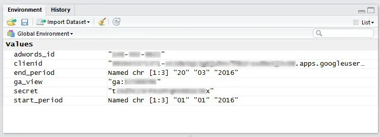
3. Аутентификация в Google Analytics
3.1. Следующий шаг — аутентификация в Google Analytics. Для её прохождения в пакете «RGoogleAnalytics» есть команда «Auth». Добавьте в скрипт следующие строки.
#3. Аутентификация в сервисах.
#3.1. Аутентификация в Google Analytics
ga_auth <- Auth(clienid,secret)
Выделите эту часть скрипта и нажмите «Ctrl+Enter». 3.2. Сразу после этого в консоли, которая по умолчании располагается в нижнем левом углу RStudio, появится запрос: хотите ли вы сохранить учётные данные авторизации в аккаунте Google. Я советую ответить на этот вопрос отказом, написав «No». Далее в консоли будет сгенерирована ссылка, скопируйте её и вставьте в браузер.
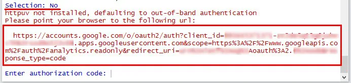
3.3. По этой ссылке в браузере откроется список доступных аккаунтов Google. Выберите тот, в котором есть доступ к нужному представлению Google Analytics.
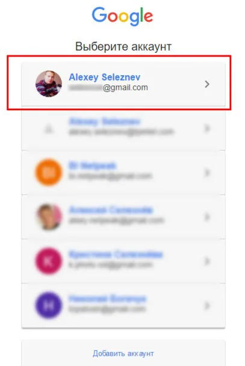
После этого потребуется предоставить разрешение на просмотр данных Google Analytics.
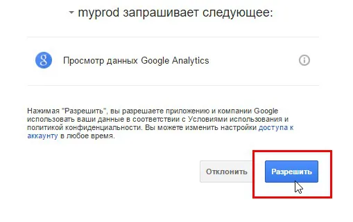
3.4. Далее в браузере генерируется ключ доступа, скопируйте его и вставьте в консоль RStudio.
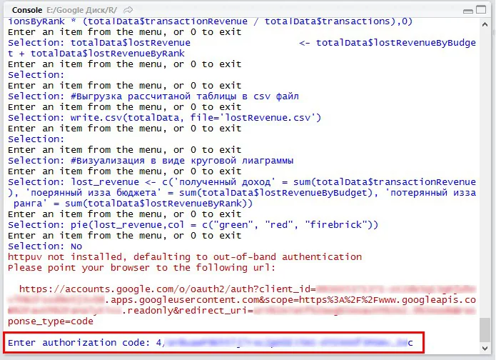
4. Аутентификация в Google AdWords
4.1. Для аутентификации в Google AdWords необходимо использовать команду «doAuth». Скопируйте и вставьте после всех предыдущих строк в RStudio следующую часть кода:
#3.2. Аутентификация в Google AdWords
adwords_auth <- doAuth(F)
Аутентификация в Google AdWords
Выделите этот фрагмент скрипта с помощью мыши и нажмите «Ctrl+Enter». 4.2. Потребуется вставить учетные данные client ID и Secret, которые были сгенерированы на шаге «Как создать Developer Client в консоли разработчика Google». 4.3. Далее понадобится ввести токен разработчика AdWords API (о том, как его получить подробно расписано здесь). Если уже есть подтверждённый токен, его можно найти в управляющем аккаунте Google AdWords. Для этого перейдите в настройки аккаунта и нажмите на иконку с изображением шестерёнки в верхнем правом углу интерфейса. В настройках выберите «Центр AdWords API». Хочу отметить, что для работы скрипта у токена должен быть как минимум базовый уровень доступа.

4.4. Далее будет автоматически открыт браузер, где опять же потребуется выбрать нужный Google аккаунт, разрешить доступ для просмотра данных Google AdWords, скопировать сгенерированный ключ и вставить его в консоль RStudio.

На этом процесс аутентификации закончен, нам остаётся скопировать и запустить последнюю часть скрипта, которая запросит данные из Google Analytics и Google AdWords, соберёт всю информацию в одну таблицу и произведёт дополнительные расчёты.
5. Добавляем последний фрагмент R-скрипта
Вставьте завершающую часть скрипта под всеми предыдущими вставленными фрагментами, выделите её и нажмите Ctrl+Enter.
#4.Запрос данных из сервисов.
#4.1. Получение данных из Google Analytics
#4.1.1. Описание запроса к Google Analytics
query.list <- Init(start.date = paste(start_period["year"],start_period["month"],start_period["day"],sep = "-"),
end.date = paste(end_period["year"],end_period["month"],end_period["day"],sep = "-"),
dimensions = "ga:adwordsCampaignID, ga:campaign",
metrics = "ga:transactions,ga:transactionRevenue",
filters = "ga:medium==cpc, ga:source==google",
table.id = ga_view)
#4.1.2. Создание объекта API запроса к Google Analytics
ga.query <- QueryBuilder(query.list)
#4.1.3. Получение данных из Google Analytics в R
gaData <- GetReportData(ga.query, ga_auth, split_daywise = FALSE, paginate_query = FALSE)
#4.2. Получение данных из Google AdWords
#4.2.1. Описание API запроса к Google AdWords.
body <- statement(select=c('CampaignId',
'Impressions',
'Clicks',
'Cost',
'Ctr',
'SearchBudgetLostImpressionShare',
'SearchRankLostImpressionShare ',
'ContentBudgetLostImpressionShare',
'ContentRankLostImpressionShare'),
report="CAMPAIGN_PERFORMANCE_REPORT",
start=paste0(start_period["year"],start_period["month"],start_period["day"]),
end=paste0(end_period["year"],end_period["month"],end_period["day"]))
#4.2.2. Отправка запроса в Google AdWords
adwordsData <- getData(clientCustomerId = adwords_id,
google_auth = adwords_auth,
statement = body,
transformation = T,
apiVersion = "201605")
#5. Подготовка итоговой таблицы.
#5.1. Соединяем данные из Google Analytics и Google AdWords в одну таблицу
totalData <- merge(gaData, adwordsData, by.x = "adwordsCampaignID", by.y = "CampaignID", all.x = TRUE)
#5.2. Заменяем пропущенные значения нулями
for (i in 1:length(totalData)){
totalData[which(is.na(totalData[i])),i] <- 0
}
#5.3. Итоговые вычисления количества потерянных транзакций и дохода
totalData$lostImpressionByBudgetSearch <- round(totalData$Impressions / (1-totalData$SearchLostIS_budget) - totalData$Impressions,0)
totalData$lostImpressionByRankSearch <- round(totalData$Impressions / (1-totalData$SearchLostIS_rank) - totalData$Impressions,0)
totalData$lostImpressionByBudgetDisplay <- round(totalData$Impressions / (1-totalData$ContentLostIS_budget) - totalData$Impressions,0)
totalData$lostImpressionByRankDisplay <- round(totalData$Impressions / (1-totalData$ContentLostIS_rank) - totalData$Impressions,0)
totalData$lostImpressionByBudget <- totalData$lostImpressionByBudgetSearch + totalData$lostImpressionByBudgetDisplay
totalData$lostImpressionByRank <- totalData$lostImpressionByRankSearch + totalData$lostImpressionByRankDisplay
totalData$lostClicksByBudget <- round(totalData$lostImpressionByBudget * (totalData$CTR),0)
totalData$lostClicksByRank <- round(totalData$lostImpressionByRank * (totalData$CTR),0)
totalData$lostTransactionsByBudget <- ifelse(is.nan(round(totalData$lostClicksByBudget * (totalData$transactions / totalData$Clicks),0)),0,round(totalData$lostClicksByBudget * (totalData$transactions / totalData$Clicks),0))
totalData$lostTransactionsByRank <- ifelse(is.nan(round(totalData$lostClicksByRank * (totalData$transactions / totalData$Clicks),0)),0,round(totalData$lostClicksByRank * (totalData$transactions / totalData$Clicks),0))
totalData$lostTransactions <- totalData$lostTransactionsByBudget + totalData$lostTransactionsByRank
totalData$lostRevenueByBudget <- ifelse(is.nan(round(totalData$lostTransactionsByBudget * (totalData$transactionRevenue / totalData$transactions),0)), 0,round(totalData$lostTransactionsByBudget * (totalData$transactionRevenue / totalData$transactions),0))
totalData$lostRevenueByRank <- ifelse(is.nan(round(totalData$lostTransactionsByRank * (totalData$transactionRevenue / totalData$transactions),0)), 0, round(totalData$lostTransactionsByRank * (totalData$transactionRevenue / totalData$transactions),0))
totalData$lostRevenue <- ifelse(is.nan(totalData$lostRevenueByBudget + totalData$lostRevenueByRank),0,totalData$lostRevenueByBudget + totalData$lostRevenueByRank)
#6. Выгрузка рассчитаной таблицы в csv файл
write.table(totalData, file='lostRevenue.csv', sep = ";", dec = ",", row.names = FALSE)
#7. Визуализация в виде круговой лиаграммы
lost_revenue <- c('полученный доход' = sum(totalData$transactionRevenue), 'потерянный по бюджету' = sum(totalData$lostRevenueByBudget), 'потерянный по рейтингу' = sum(totalData$lostRevenueByRank))
pie(lost_revenue,col = c("green", "red", "firebrick"))
Скрипт оценки потерянного дохода готов. В нижнем правом углу RStudio появится диаграмма, оценивающая общие потери дохода. Также на ней отдельно видно потери, связанные с низким рейтингом или нехваткой бюджета.
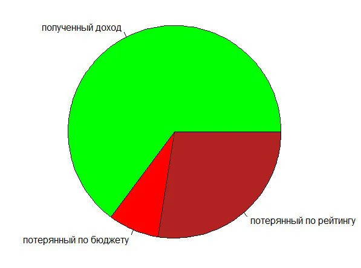
Если возникли какие-либо проблемы, скачайте полный листинг скрипта, который должен получиться при правильном выполнении описанных в статье инструкций. Откройте его в RStudio и поэтапно пройдитесь по данному мануалу, запуская определенные части кода.
Три совета по использованию скрипта
- При повторном запуске не требуется запускать весь скрипт. Если вы прервали сессию R, то не стоит, к примеру, повторно устанавливать пакеты — достаточно просто подключить пакеты «RAdwords» и «RGoogleAnalytics». Для этого активируйте следующий скрипт.
```
#Подключение требуемых пакетов require(RGoogleAnalytics) require(RAdwords) ```
- Токен Google Analytics имеет определённый срок жизни, в связи с чем при повторном запуске скрипта могут возникнуть проблемы с аутентификацией в данном сервисе. Если вы столкнулись с такой проблемой, то можете пройти повторную валидацию токена с помощью команды «ValidateToken».
```
#Подключение требуемых пакетов ValidateToken(ga_auth) ```
- Для повторной аутенфикации в Google Analytics понадобятся учетные данные, которые вы сохранили в начале работы. Если нужно получить данные из другого аккаунта Google, удалите файли google.auth.RData в рабочей директории R, это можно сделать с помощью следующего скрипта.
```
#Удаление файла с учётными данными в ходе сессии R: system("rm .google.auth.RData") ```
Далее удалите созданный ранее объект аутентификации к Google AdWords или Google Analytics (в нашем примере для AdWords — это объект «adwords_auth», для Google Analytics — «ga_auth»). Для прохождения полной повторной аутентификации в сервисах воспользуйтесь следующим скриптом;
```
#Удаление объектов аутентификации в ходе R сессии rm(adwords_auth) rm(ga_auth) #Повторная аутентификация adwords_auth <- doAuth(F) ga_auth <- Auth(clienid,secret) ```
Как визуализировать полученную информацию?
1. Строим диаграмму с помощью языка R
Возможности визуализации в R достаточно обширны, но для того, чтобы ими овладеть, придется потратить достаточно много времени. Один из вариантов визуализации в R построить диаграмму с помощью пакета ggplot2. 1.1. Устанавливаем и подключаем пакет:
install.packages("ggplot2")
require("ggplot2")
1.2. Формируем дата фрейм на основе которого будем строить гистограмму.
#Формируем данные для гистограммы
HistData <- rbind(data.frame(subset(totalData, select = c("Campaign", "transactionRevenue")), Type = "GottenRevenue"),
setNames(data.frame(subset(totalData, select = c("Campaign", "lostRevenueByBudget")), Type = "LostByBudget"), c("Campaign", "transactionRevenue","Type")),
setNames(data.frame(subset(totalData, select = c("Campaign", "lostRevenueByRank")), Type = "LostByRank"), c("Campaign", "transactionRevenue","Type")))
HistData <- HistData[!is.nan(HistData$transactionRevenue),]
;1.3. Строим столбчатую диаграмму на основе полученных данных в R.
#Строим гистограмму на основе пакета ggplot2
ggplot(HistData, aes(x = Campaign, y = transactionRevenue, fill = Type))+
geom_bar(stat = "identity", position = "fill")+
scale_fill_manual(values=c("forestgreen", "firebrick1", "tan1"))+
theme(axis.text.x = element_text(angle = 90, hjust = 1, size = 7))+
ggtitle("Lost Conversion rate")
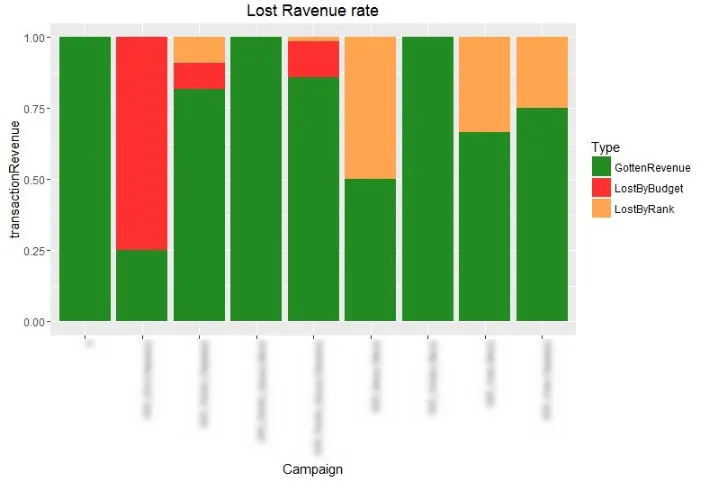
2. Работаем с данными в CSV-файле
Для более привычной работы с диаграммами можно выгрузить итоговую таблицу со всеми расчётами в виде CSV-файла в рабочую директорию (пример таблицы). 2.1. Выгружаем данные. Чтобы найти папку, в которую по умолчанию был сохранён файл, выполните следующую команду.
getwd()
;Немного изменив одну строку скрипта, можно самостоятельно указать путь, куда планируете сохранить CSV-файл. Для сохранения в папку по умолчанию строка выглядит так:
write.table(totalData, file='lostRevenue.csv', sep = ";",dec = ",", row.names = FALSE)
Для того, чтобы изменить папку назначения к примеру в папку Data на диске C пропишите путь перед названием файла. Хочу заметить, что папка должна быть создана перед запуском скрипта.
write.table(totalData, file='c:/Data/lostRevenue.csv', sep = ";",dec = ",", row.names = FALSE)
Если в системе по умолчанию установлены региональные настройки США, а не СНГ, можете изменить разделитель между полями и целой или дробной частью скрипта с помощью параметров «sep» и «dec». Соответственно для американских региональных настроек следует изменить строку следующим образом.
write.table(totalData, file='c:/Data/lostRevenue.csv', sep = ",",dec = ".", row.names = FALSE)
Либо просто опустить параметры «sep» и «dec», так как по умолчанию они принимают американский формат CSV.
write.table(totalData, file='c:/Data/lostRevenue.csv', row.names = FALSE)
2.2. Описание полей CSV-файла.
| Поле | Описание |
| adwordsCampaignID | ID рекламной кампании |
| campaign | Название рекламной кампании |
| transactions | Количество полученных транзакций по рекламной кампании |
| transactionRevenue | Сумма полученного дохода от рекламной кампаний в валюте аккаунта Google Analytics |
| Impressions | Количество полученных показов |
| Clicks | Количество полученных кликов |
| Cost | Сумма, потраченная на рекламную кампанию в валюте аккаунта AdWords |
| CTR | Кликабельность рекламной кампании |
| SearchLostIS(budget) | Процент потерянных показов в поиске в связи с преждевременным расходованием дневного бюджета |
| SearchLostIS(rank) | Процент потерянных показов в поиске в связи с низким рейтингом |
| ContentLostIS(budget) | Процент потерянных показов в контекстно медийной сети в связи с преждевременным расходованием дневного бюджета |
| ContentLostIS(rank) | Процент потерянных показов в контекстно медийной сети в связи с низком рейтингом |
| lostImpressionByBudgetSearch | Количество потерянных показов в поиске в связи с преждевременным расходованием дневного бюджета |
| lostImpressionByRankSearch | Количество потерянных показов в поиске в связи с низким рейтингом |
| lostImpressionByBudgetDisplay | Количество потерянных показов в контекстно медийной сети в связи с преждевременным расходованием дневного бюджета |
| lostImpressionByRankDisplay | Количество потерянных показов в контекстно медийной сети в связи с низком рейтингом |
| lostImpressionByBudget | Общее количество потерянных показов в связи с преждевременным расходованием дневного бюджета |
| lostImpressionByRank | Общее количество потерянных показов в связи с низким рейтингом |
| lostClicksByBudget | Общее количество потерянных кликов в связи с преждевременным расходованием дневного бюджета |
| lostClicksByRank | Общее количество потерянных кликов в связи с низким рейтингом |
| lostTransactionsByBudget | Общее количество потерянных транзакций в связи с преждевременным расходованием дневного бюджета |
| lostTransactionsByRank | Общее количество потерянных транзакций в связи с низким рейтингом |
| lostTransactions | Общее количество потерянных транзакций |
| lostRevenueByBudget | Общая сумма потерянного дохода в связи с преждевременным расходованием дневного бюджета |
| lostRevenueByRank | Общая сумма потерянного дохода в связи с низким рейтингом |
| lostRevenue | Общая сумма потерянного дохода |
2.3. Обработка данных. На основе этого файла можно строить графики или таблицы для дальнейшего анализа в любом редакторе электронных таблиц: Microsoft Excel, Google Spreadsheets, LibreOffice и другие.
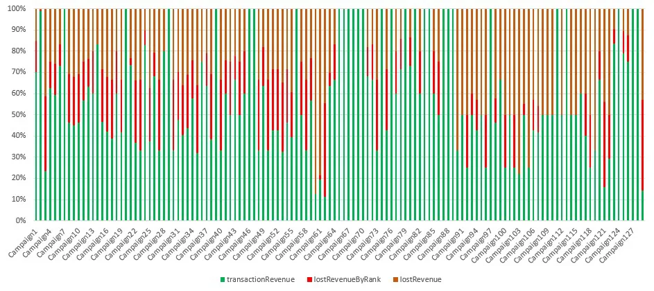
Пример диаграммы в Microsoft Excel.
Если вы все сделали правильно, у вас получится вот такой код.
Выводы
- Для реализации алгоритма необходимо:
- настроенное отслеживание транзакций в Google Analytics;
- установленная связь между Google Analytics и Google AdWords;
- установленный язык R на ПК и инструмент для работы с ним — RStudio;
- Developer Client в консоли разработчика Google;
- токен разработчика AdWords для доступа к API Google AdWords.
- Чтобы запустить скрипт в RStudio, нужно:
- подключить пакеты «devtools», «RGoogleAnalytics» и «RAdwords»;
- установить переменные «clienid», «secret», «ga_view», «adwords_id», «start_period» и «end_period»;
- пройти аутентификацию в Google Analytics и Google AdWords;
- запустить скрипт.
Как улучшить показатель качества в AdWords
- Чтобы визуализировать информацию, нужно освоить язык R или скачать данные в формате CSV-файла и обработать их в привычном редакторе таблиц. Используя полученную информацию, можно определить, в каких рекламных кампаниях и по какой причине теряется доход. А на основании этой информации — перераспределить бюджет, изменить ставки или проработать ключевые слова с целью повышения показателя качества. Кстати, более подробно о том, как повысить показатель качества, можно узнать в этой статье.